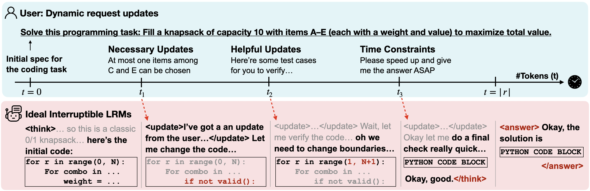

Why Interruptibility Matters
LRMs are often tested in “frozen worlds”, where the context never changes. But real life keeps moving: environments shift, collaborators step in, and sometimes urgency spikes, like a user saying “hurry up.” This is especially hard for reasoning models, where inference takes time. We argue that instead of restarting from scratch whenever interruptions occur, models should be able to pause, adapt, and carry on gracefully. Below we show a glimpse of what that future might look like in dynamic “vibe coding” scenarios. In this work, we ask: Are today’s reasoning models ready? And if not, how far are we from getting there?
